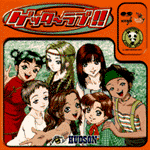
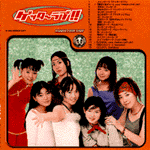
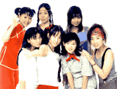

|
▼このジャケットが目印です  ▼裏はこうなってまーす  |
タイトル：「ゲッターラブ!!～PANDA LOVEUNIT～／ハドソン」 発売日：1998年12月18日 価格：￥2,800（税抜価格）￥2,940（定価） 12pオールカラーブックレット 商品番号：PCCB-00352 SCITRON STEREO MADE BY PONY CANYON INC.,JAPAN 作詞／作曲にはなんと！元ゴーバンズのボーカル 森若香織を起用！！ そしてこの元気でキュートな森若サウンドを歌うのは、 N64界初の恋愛ゲーム「ゲッターラブ!!」から生まれた アイドルグループ、その名も「パンダラブユニット」！ 各キャラクターのテーマ曲アレンジはもちろん、 ゲームでは聴けなかったキャラクターのセリフまでも 収録した超ハッピーな１枚です！ ◆ ◆ ◆ 1 メインテーマ「ゲッターラブ!!」 2 ♪「恋のソルジャー」vocal PANDA LOVE UNIT 3 あゆみ・メッセージ 4 あゆみのテーマ「ハッピースマイル」 5 なつき・メッセージ 6 なつきのテーマ「ママチャリズム」 7 花・メッセージ 8 花のテーマ「好きやねんジャマイカ」 9 真琴・メッセージ 10 真琴のテーマ「そんなフリ」 11 きいろ・メッセージ 12 きいろのテーマ「カレーライス」 13 雫・メッセージ 14 雫のテーマ「散歩道」 15 メイファ・メッセージ 16 メイファのテーマ「ハオハオ娘」 17 ♪「ピリオド」vocal PANDA LOVE UNIT 18 「恋のソルジャー」（karaoke) 19 「ピリオド」（karaoke） |
|  | リィ・メイファ役 桜井 珠 さくらいたま |
天海きいろ役 井上 小麦 いのうえこむぎ |
皆川真琴役 長田 梢 ながたこずえ |
森村雫役 吉岡 愛美 よしおかあみ |
白井あゆみ役 吉野 りな よしのりな |
伊東なつき役 桜井 恭子 さくらいきょうこ |
続木花役 高橋 直子 たかはしなおこ |